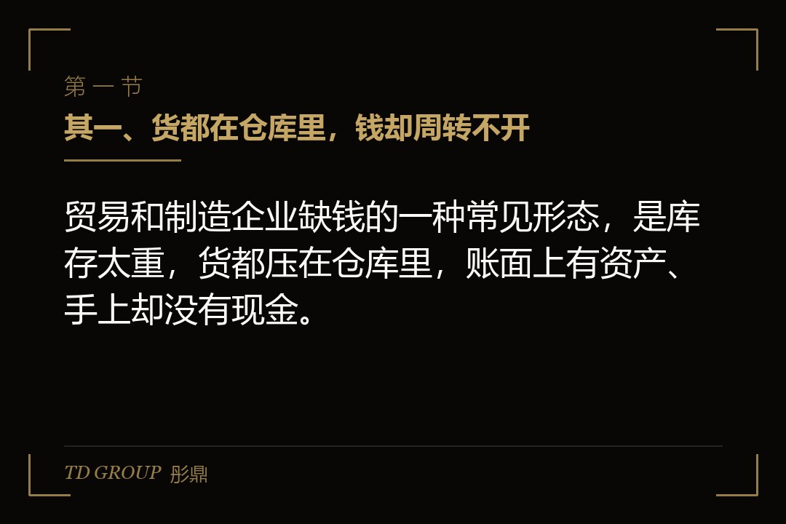
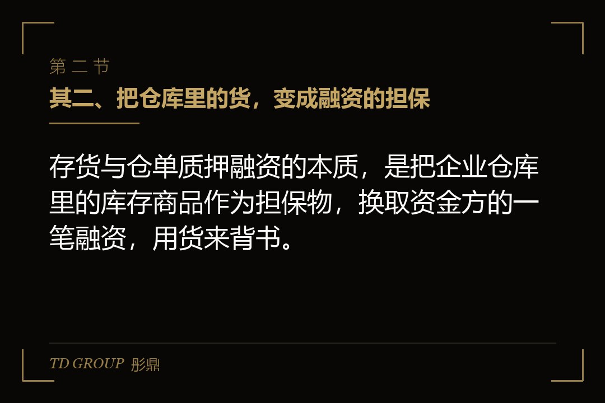
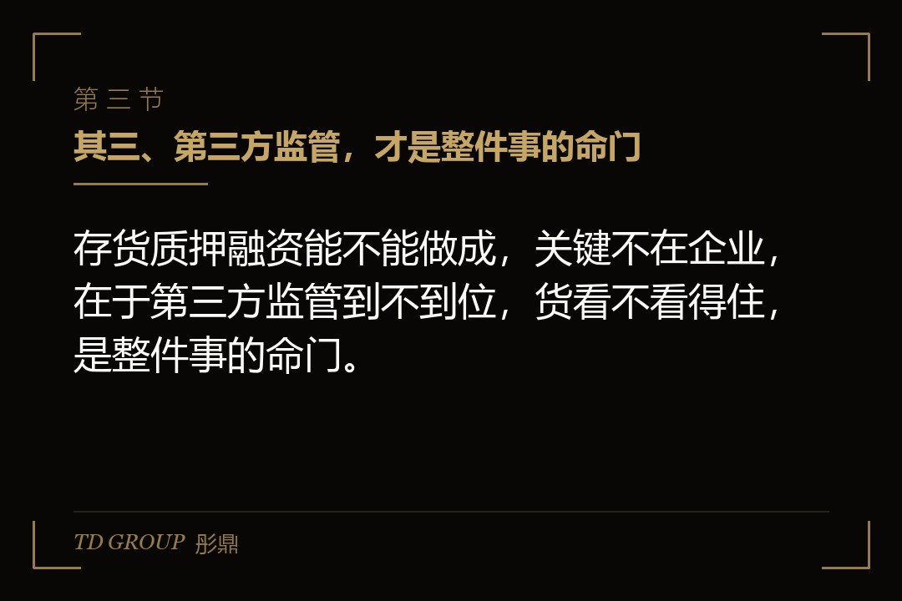

其一、货都在仓库里，钱却周转不开

结论先行：贸易和制造企业缺钱的一种常见形态，是库存太重，货都压在仓库里，账面上有资产、手上却没有现金。
假设有家做钢材贸易的企业，旺季前要大量备货，一下把几千万的资金都变成了仓库里的钢材。客户下单、回款有个周期，中间的这段时间，它的资金几乎全被存货占住了。
它去银行借过，银行说它抵押物不足。它也想过压货，但旺季不备货就没生意，不备货的损失比备货的资金压力更大，这条路走不通。资金链最紧的那几个月，它只能靠赊销和东挪西借硬扛，扛得过去是旺季，扛不过去就是一场库存爆雷。
这就是很多靠库存周转吃饭的企业的共同处境：货是它最大的资产，也是它最大的资金黑洞，传统的融资通道不认这些堆在仓库里的货。
其二、把仓库里的货，变成融资的担保

结论先行：存货与仓单质押融资的本质，是把企业仓库里的库存商品作为担保物，换取资金方的一笔融资，用货来背书。
打个比方，你手里有一批货，暂时用不上，但值钱。你可以把这批货交给一个第三方看管，由这个第三方出一张单子，证明货在、货是你的、货值多少，然后拿这张单子去借钱。存货质押借的是货本身的价值，仓单质押借的是那张代表货物的单子。
操作上有两种常见的形态。一种是静态质押，货放在指定的仓库里不动，融资期内不流动，简单清楚；另一种是动态质押，货可以进进出出，只要质押物的总量不低于约定的底线就行，更适合每天都要进出货的贸易企业。
不管是哪一种，核心都是三件事：货的权属要清楚、货值要算得准、货要有人看住。这三件事做不好，融资就是空中楼阁。
仓单那一层也值得说清楚。仓单是由仓库出具的、代表一批货物的凭证，谁持有仓单，谁就有权向仓库提货。传统上是纸质的，现在越来越多地变成电子仓单，登记、流转、质押都在系统里完成。电子仓单的好处是流转快、不易造假，但它能不能被资金方认可，取决于那个登记和开单的平台是不是规范、有没有公信力。同样的货，一张来自正规平台、可查可验的仓单，和一张来路不明、谁都能开的白条，能借到的钱是天壤之别。
其三、第三方监管，才是整件事的命门

结论先行：存货质押融资能不能做成，关键不在企业，在于第三方监管到不到位，货看不看得住，是整件事的命门。
货是流动的、会变质的、会贬值的，所以必须有一个独立的第三方来管住它：仓库负责保管，监管方负责确认货在不在、数量对不对、是不是真的属于借款企业。资金方信的不是企业的一句话，而是这个第三方出具的、可以追责的确认。
这里最容易出问题。有些安排里，监管方就是企业自己的关联方，或者仓库和企业串通，货已经被提走了，监管报告还写着货在。这种虚假监管一旦暴露，融资立刻崩盘，资金方、监管方、企业三方一起出事，谁也脱不了干系。
所以企业做之前，要弄清楚监管方是谁、是不是真的独立、有没有真实的控货能力，能不能在货被异常提取时及时发现并拦截。一个真正独立的、有信誉的第三方监管，比一个更低的利率更值钱，因为它守住的是一整个融资安排能不能成立的底线。
其四、货价一跌，麻烦就来了
结论先行：存货质押融资最大的风险是货值波动，货价一旦大幅下跌，就可能触发补充担保、提高质押率甚至提前收贷。
资金方放款时，会按货值的一定比例给钱，这个比例叫质押率。比如货值一千万，质押率七成，就放七百万，剩下的三成是给价格波动留的安全垫。货价越稳定，质押率可以越高；货价波动越大，质押率就压得越低，这是资金方给自己留的缓冲，也是给企业敲的一记警钟。
麻烦就出在价格下跌的时候。假设那批钢材押进去时一千万，行情走弱跌到八百万，安全垫就被吃掉了。这时候资金方会要求企业补货、补保证金，或者干脆提前收回一部分贷款。企业本来就是因为缺钱才押货，这时候又拿不出钱来补，就容易陷入被抽贷、被迫低价卖货、越卖越亏的恶性循环。这个循环一旦转起来，往往不是企业自己能停下来的，因为它卖货回笼的钱又要拿去还贷，还完贷手里的货更少、担保更薄，资金方反而更急着抽。
所以做存货质押，货价稳不稳，比货值高不高更要紧。价格大起大落的品种，看着货值很高，实际能做出来的融资很有限，风险还大。
补货和保证金这两件事，也值得企业提前算清。很多存货质押协议里都写着，货值跌到某个线以下，企业要么往仓库里补货，要么往监管账户里补保证金，把质押率拉回约定的水平。这个补的动作是有期限的，往往是几个工作日之内。企业如果连补货的余量都没有，就等于是把自己的命脉交到了行情手里。所以做之前，一定要留出补货或者补保证金的余力，别把每一分货都押进去。
其五、货的质量和权属，比想象中更难缠
结论先行：存货质押融资里，货值之外还有两件事常常被忽略，一是货的权属清不清楚，二是货本身容不容易保管和变现。
权属是头一个坑。货在仓库里，它到底是你的，还是你已经卖给下游、只是暂时放在这里的，或者是不是已经被押给了别人，这些都要查得明明白白。货的权属有争议，或者一货多押，资金方拿到的担保就是空的。
保管和变现是第二个坑。有些货会变质、会过期、会过时，比如生鲜、时尚、电子元器件，押进去没几个月就贬值甚至报废了；有些货虽然值钱，但根本卖不掉，真到要处置的时候找不到买家。资金方要的是那种随时能变现的货，而不是一堆账面好看的死货。
所以真正适合做质押的存货，是那些标准化、易保管、有活跃市场的品种，比如大宗商品、标准化的工业原料。太特殊的、太容易过时的货，即便货值很高，也不是好的担保物。
一货多押是另一个要特别警惕的坑。因为货放在仓库里，企业理论上可以拿同一批货，向不同资金方各做一次质押，只要监管信息不打通，就没人发现。等到出了事，两个资金方都来主张同一批货，才发现担保是重复的。所以企业自己做的时候要守规矩，选监管方的时候也要看它的登记信息是不是和别家打通，能不能查得到这批货有没有已经被押过。干净的登记，是保护资金方，最终也是在保护企业自己的信用。
其六、做之前先核清四件事
结论先行：要不要做存货与仓单质押融资，先把货值稳不稳、权属清不清、监管真不真、处置顺不顺这四件事核清，再签协议。
其一，货值稳不稳。把这个品种过去几年的价格波动拉出来看，波动太大的，做出来的融资额度有限，还容易被抽贷。
其二，权属清不清。把要押进去的货，权属、有没有重复质押、是不是已经预售，逐项核查清楚，别让担保物变成空头。
其三，监管真不真。看监管方是不是独立、有没有真实的控货能力，能不能定期、准确地出确认报告。这一步是整个安排能不能成立的命门。
其四，处置顺不顺。真到了要处置的时候，这批货能不能卖得掉、卖得回几成，提前想清楚最坏的情况，别只看到放款时的那笔钱。
这四件事想清楚，存货质押才是一条把库存变成现金的通道；没想清楚就签，它可能只是在你最缺钱的时候，把一批会贬值的货变成了一个随时可能被抽贷的窟窿。
本文为知识梳理，不构成专业意见。存货与仓单质押融资涉及货值评估、权属核查、第三方监管与处置安排等多道专业环节，具体质押率、监管机制、补货条款与追偿安排以双方正式协议及监管机构口径为准。